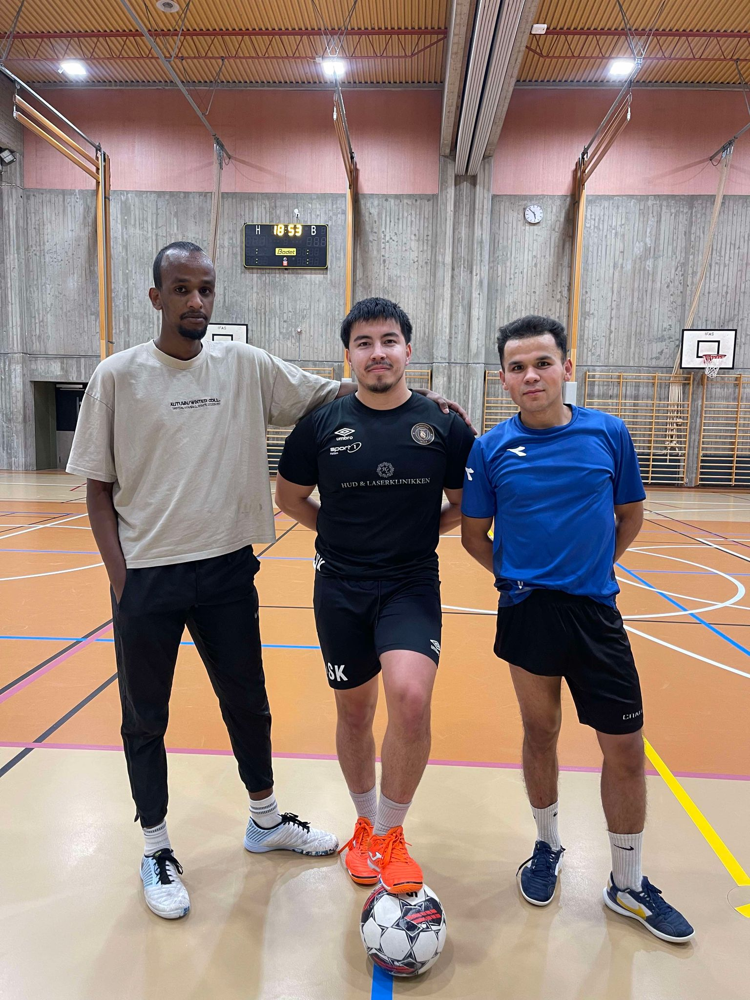

Yashar Hiwi – Økonomiske Utfordringer Uten Ekstra Inntekt
Bilde av Yashar Hiwi, som står overfor økende levekostnader mens han studerer. Foto: Ezat Jakob
For mange norske studenter er Lånekassen en viktig del av økonomien. Men er støtten virkelig nok i dagens økonomiske klima? Vi har snakket med Yashar Hiwi, en student ved Høgskolen i Østfold, om hans erfaring med å leve på studielån og stipend uten deltidsjobb.
Yashar forteller at han har valgt å fokusere på studiene uten å jobbe ved siden av. "Lånekassen gir meg akkurat nok til å dekke husleien og noen grunnleggende utgifter, men det er ofte utfordrende å få pengene til å strekke til hele måneden," sier han. Han legger til at prisøkningen på dagligvarer og strøm har gjort det vanskeligere å holde et balansert budsjett, spesielt når matprisene har økt med 6 % det siste året, mens Lånekassens støtte kun har økt med 2 %. Danskebank
Les mer
Pendling til skolen – finnes det løsninger
For studenter som pendler fra Sarpsborg til Høgskolen i Østfold, er reisen mer enn bare transport –
det er en daglig utfordring. Bussene går kun én gang i timen, og en forsinkelse kan føre til betydelige konsekvenser for både
skolearbeidet og karakterene. Hvordan påvirker dette studentenes hverdag? Og finnes det løsninger
som kan lette den pendlerbelastede hverdagen? Klikk på "Les mer" for å lese om studentenes erfaringer,
de økonomiske utfordringene ved å bo i Sarpsborg,
og hva som kan gjøres for å forbedre pendlingserfaringen for alle.
Lenke
Les mer

Studentidrettens Rolle i Halden: Samhold og Balanse i Studiehverdagen
Oppdag hvordan studentidrett i Halden skaper samhold og bidrar til en sunn balanse mellom studier og fritid.
Les om Salomon Kochkarov, en engasjert fotball- og volleyballspiller,
som forteller hvordan idretten gir avkobling og styrker fellesskapet i studentmiljøet.
Les mer
En Fremtid Preget av Økonomisk Usikkerhet
Yashar Hiwi's erfaring er et tydelig eksempel på hvordan økonomisk usikkerhet preger hverdagen til norske studenter.
Økte levekostnader kombinert med utilstrekkelig støtte fra Lånekassen tvinger mange studenter til å vurdere deltidsjobb,
til tross for at det kan gå på bekostning av studietiden. “Jeg vurderer ofte om jeg skal begynne å jobbe, men jeg frykter at det vil gå ut over skolearbeidet,”
sier Yashar. Hvis støtten fra Lånekassen ikke økes, vil flere studenter måtte finne alternative måter å få økonomien til å gå rundt på.
Les mer